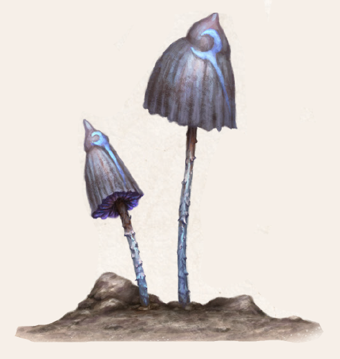

So im Kult des Namenlosen überhaupt etwas den Status „heilig“ besitzt, dann sicherlich der kaum zwei Finger hohe Rattenpilz. Hut und Stängel sind unscheinbar grau bis dunkelgrau, seine Lamellen weiß mit purpurnen Einsprengseln. Allzeit sind sie von einem nebelig blauen Leuchten umgeben, das in Nacht und Zwielicht unheimlich wirkt. Der Hutpilz ist zwar selten, kann aber in ganz Aventurien gefunden werden. Fast nie wächst er in unverdorbener Erde, sondern gedeiht dort besonders prächtig und zahlreich, wo Namenlose Macht präsent ist. Ein Rattenpilzvorkommen lässt also direkt auf die Nähe einer Opferstätte oder eines Namenlosen-Zirkels schließen.
Der Rattenpilz ist sehr gefährlich. Arglose Pilzsammler werden häufig von seinem höchste Gaumenfreuden verheißenden, würzig-verführerischen Geruch angezogen. Doch wer einen Pilz verzehrt, wird tagelang von Namenlosen Zweifeln geplagt. Bislang fester Glaube wird erschüttert, Gewissheiten hinterfragt, derweil Alpträume den sicher geglaubten Daseinszweck unterhöhlen. Besonders gefährdet sind hier jene, die ohne festen Glauben sind, denn sie fallen Bekehrungsversuchen recht leicht zum Opfer. Ein Geweihter der Zwölfe hingegen muss einen solchen Pilz mitunter nur berühren, um an den Zorganpocken zu erkranken. Diener des Namenlosen schätzen den Rattenpilz sehr und nutzen ihn als Zusatz für allerlei Alchimika. Als Absud lässt sich das Gift des Namenlosen Zweifels leicht verbreiten.
Verbreitung:
Landschaftstyp: alle
Regionen: selten, aber überall dort zu finden, wo der Namenlose Einfluss oder Kultstätten besitzt
Suchschwierigkeit: -4
Bestimmungsschwierigkeit: -3
Anwendungen: 1/1/2/2/3/3
Wirkung:
Roh:
Berührung: bei Geweihten (außer jenen des Namenlosen) Ansteckung mit Zorganpocken bei 11-20 auf W20
Einatmung: Der Meister würfelt eine Giftprobe (Stufe 3, erschwert um die SK des Helden). Bei Erfolg atmet der Charakter genug Sporen ein oder verspeist den Pilz gar, sodass Zweifel von ihm Besitz ergreifen.
Verzehr: siehe Berührung und Einatmung
Verarbeitet: siehe Rezepte
Preis: wird nicht öffentlich gehandelt
Rezepte:
Pflanzliche Gifte: Rattenpilzgift
Volksbrauchtum:
Als Zeichen besonderer Gunst gelten „Hexenringe“, also im Kreis wachsende Anhäufungen aus Rattenpilzen, die als Schutzringe bei der Beschwörung von Dämonen dienen und unter deren Einfluss Wunder des Namenlosen leichter gelingen sollen.
Haltbarkeit:
Roh: siehe Haltbarmachung